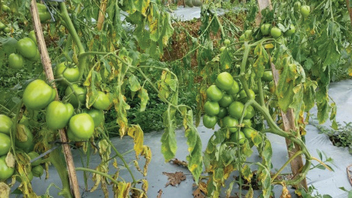
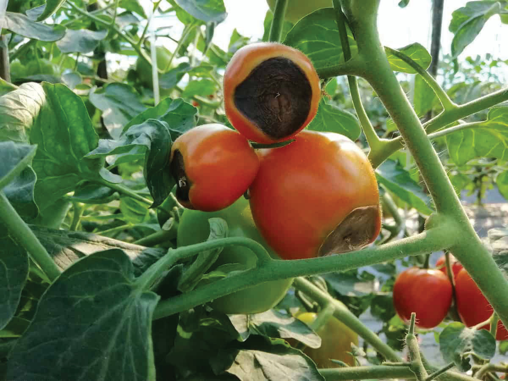
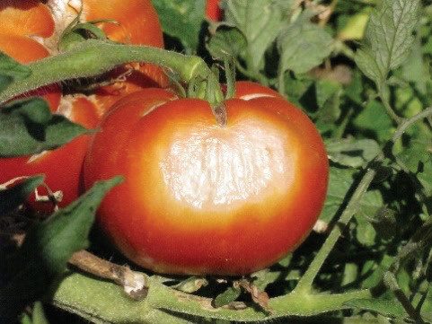

Fusarium wilt disease
How to identify it: Look for yellowing that starts from the base of the stem and goes upwards (refer to Figure 8.13). How to manage it: Keep your field free from weeds, avoid too much watering, and control insects and nematodes in the soil.

Blossom end rot
It is caused by a deficiency of calcium. How to identify it: Look for sunken, brownish-black spots on fruits (Figure 8.14). How to manage it: Keep your plants well-watered, use mulches to reduce the amount of nitrogen fertiliser you apply, and supply your plants with enough calcium.

Sunscald
This is a physiological disorder in tomato fruits caused by over-exposure to hot and bright sunlight. How to know it: Look for pale white or yellow patches on tomato fruits (refer to Figure 8.15). How to manage it: Choose heat-tolerant varieties of tomatoes and supply your plants with balanced nutrients.
